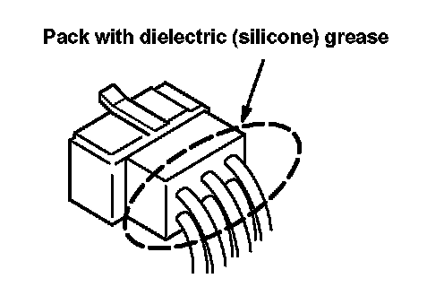

Troubleshooting Precautions
Troubleshooting PrecautionsBefore Troubleshooting
1. Check the main fuse and the fuse box.
2. Check the battery for damage, state of charge, and clean and tight connections.
CAUTION:
- Do not quick-charge a battery unless the battery ground cable has been disconnected, or you will damage the alternator diodes.
- Do not attempt to crank the engine with the ground cable disconnected or you will severely damage the wiring.
While You're Working
1. Make sure connectors are clean, and have no loose terminals or receptacles.
2. Make sure that connectors without wire seals are packed with dielectric (silicone) grease. Part Number: 08798-9001.

3. When connecting a connector, push it until it "clicks" into place.
CAUTION:
- Do not pull on the wires when disconnecting a connector. Pull only on the connector housings.
- Most circuits include solid-state devices. Test the voltages in these circuits only with a 10-mega-ohms or higher impedance digital multimeter. Never use a test light or analog meter on circuits that contain solid-state devices. Damage to the devices may result.